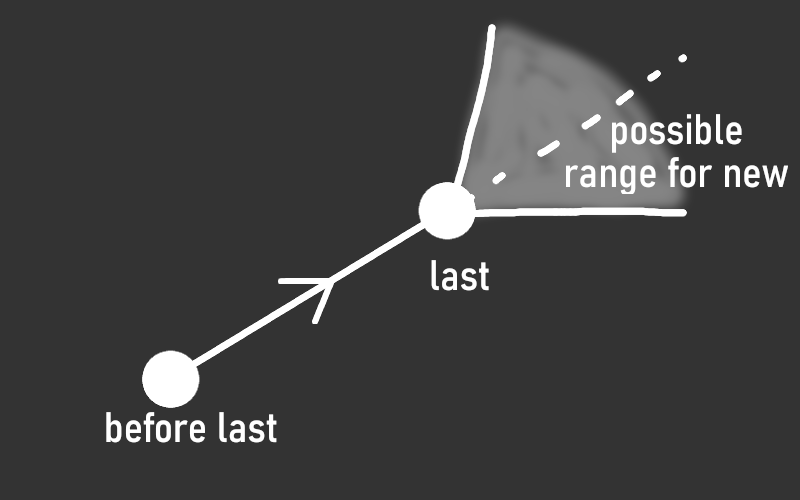

This script adds birds that follow procedurally generated paths and are animated to flap their wings in a natural way.
When the number of birds in the world is less than a predetermined amount, a new bird is spawned within a radius of the player just above the ground. The bird will appear and immediately fly upwards. So that the player doesn't see a bird appear out of thin air, they are always spawned somewhere that the player cannot see. The logic for that is explained here.
A bird is removed if they are a certain distance away and not on the screen.
A bird's path is determined by a list of keyframes that are spaced far apart. To find a new keyframe, an x-z coordinate is first found which is within some angle of the current trajectory as shown in the image below. Then the hight of the world at this new keyframe is found, and the y coordinate is set to be some number of blocks above it. A raycast is also done, and the keyframe is cancelled if it detects that the bird might fly into something. All of this makes the birds fly high above the ground without ever making sharp turns.
If the birds were animated to fly linearly between the keyframes, it would look very unrealistic. I want then to fly in smooth sweeping motions. Thankfully, I already had experience with smoothing keyframes from my camera animations project. It uses Catmull-Rom splines to automatically make smooth curves between keyframes.
Firstly, I created a 3d model for the birds, based off of an american robin, and animated the wings based on a couple of sine waves, one for a roll rotation and another for a pitch rotation of each wing.
There are two helpful bits of information about a bird that can be used to animate it: its current velocity and acceleration.
$$ {\vec{v} = \frac{\partial \vec{s}}{\partial t} \approx \frac{\vec{s_2}-\vec{s_1}}{t_2-t_1}} $$ $$ {\vec{a} = \frac{\partial \vec{v}}{\partial t} \approx \frac{\vec{v_2}-\vec{v_1}}{t_2-t_1}} $$The velocity vector \(v\) will always point in the direction that the bird is flying, so that's used to rotate the model to always be facing the way it's going.
Birds lean to one side when they want to turn. To simulate this, I find how much the acceleration vector is to the right or left of the bird, and make it roll accordingly.
To animate the wings, I set a flap strength value to be 0 when the bird is gliding downwards and higher the more the bird is climbing in the air. This value is used to animate the sine functions that make the wings flap up and down. Another sine function is used to make the birds bob up and down a bit while flapping, instead of being perfectly smooth.